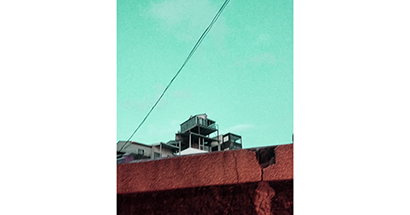
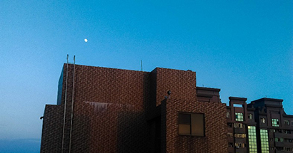
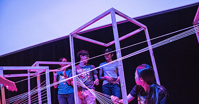

SEP 04, 2020
最近的回顧
現在是半夜1:30，我本來預計明天7點要起床的，但今天一如前三天，又焦慮得無法入睡。一閉上眼，只感覺到聲音在我腦中亂竄，無法止息，心跳快速，眼睛疲累卻無法睡著，各種黑暗的想法和爆炸的資訊沒辦法停歇...

MAY 20, 2020
夏日慢版
最近手上這台acer aspire愈發遲緩起來，所有指令都以慢半拍的姿態游動，開個illustrator不時黑屏，連藍芽開關和應用程式搜尋欄都直接憑空消失。這究竟是因為是在中國灌的系統有問題，還是它也是一樣，老了，累了...

DEC 27, 2019
Rooftop
我其實記不大起來自己是從何時開始喜歡跑上頂樓。
一個早期的記憶是小學校園中設有一座鐵架子構成的器材，器材的玩法是在那些由鐵鍊連結的幾何造型之間...
一個早期的記憶是小學校園中設有一座鐵架子構成的器材，器材的玩法是在那些由鐵鍊連結的幾何造型之間...

DEC 23, 2019
碎唸
最近意識到，過去曾如此努力想要擺脫別人告訴我該怎麼做的景況，現在的我卻試著遵循某種教條、某種信仰來建立安全感。成為一個nobody的人很容易,跟著別人的路走，不思考就不會痛苦。但蜷縮於角落真是太窩囊...

DEC 12, 2020
最近的回顧
最近手上這台acer aspire愈發遲緩起來，所有指令都以慢半拍的姿態游動，開個illustrator不時黑屏，連藍芽開關和應用程式搜尋欄都直接憑空消失。這究竟是因為是在中國灌的系統有問題，還是它也是一樣，老了，累了...
DEC 12, 2020
最近的回顧
最近手上這台acer aspire愈發遲緩起來，所有指令都以慢半拍的姿態游動，開個illustrator不時黑屏，連藍芽開關和應用程式搜尋欄都直接憑空消失。這究竟是因為是在中國灌的系統有問題，還是它也是一樣，老了，累了...